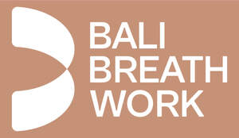
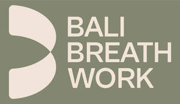
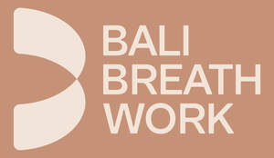
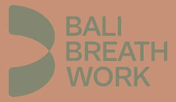

Trade Mark Journal No.2026/007 13 February 2026
UK00004332338 29 January 2026 (3,4,9,14,16,18,21,24,25,35,38,41)
Mark 1

Mark 2

Mark 3

Mark 4

- Class 3
- Dry shampoo; skin moisturizers; skin cleansers; lip balm; deodorants for personal use; cosmetic creams; foot creams; massage oils; essential oils for cosmetic purposes; aromatic essential oils; fragrances for personal use; air fragrance reed diffusers; topical skin sprays for cosmetic purposes; skin care mousse; hair mousse; wipes impregnated with a skin cleanser; cleansing and moisturizing creams, foams and lotions; beauty masks; pre-moistened or impregnated cleansing pads, tissues and wipes; face powder in the form of powder-coated paper; beauty serums; make-up primer; beauty balm creams; perfume oils; body oils for cosmetic purposes; hair shampoo; hair conditioners; hair emollients; hair moisturizers; hair nourishers; hair oils; hair spray; hair care lotions; hair masks; beauty gels; shower and bath gels; body soak; antiperspirants for personal use; sunscreen creams for cosmetic purposes; anti-chaffing preparations, namely, creams, lotions and spray; eye make-up; facial make-up; eye liner; mascara; eye shadows; cosmetic pencils; face powder; rouge; lipsticks; lip glosses; eyebrow pencils; make-up; foundation; essential oils; incense; lip pomades for cosmetic purposes; non-medicated skin care preparations, namely, creams, pomades, lotions, gels, emulsions, balms, moisturizers, milks, oils, cleansers, soaps and peels. .
- Class 4
- Candles namely, scented candles, wicks and lamp oil. .
- Class 9
- Downloadable software and software applications for playing audio and video podcasts featuring content in the fields of business, life, personal development and the humanities; Downloadable platform software in relation to podcasts and downloadable podcasts, namely, software for playing audio and video podcasts; Downloadable computer software in relation to podcasts and downloadable podcasts, namely, software for playing audio and video podcasts; Downloadable publications, namely, books, booklets, magazines, news papers and articles in the fields of business, lifestyle, personal development, and the humanities; Downloadable Podcasts in the fields of business, life, personal development and the humanities; Downloadable interactive entertainment software, namely, software for playing audio and video podcasts; Downloadable media, particularly, downloadable podcasts in the fields Business, life, personal development and the humanities. .
- Class 14
- Jewellery; precious stones; watches; costume jewellery; keyrings.
- Class 16
- Writing paper, photographs; stationery; printed publications, catalogues, calendars, tags and labels; packaging materials.
- Class 18
- Purses; pouches for holding make-up, keys and other personal items; handbags; messenger bags; cosmetic bags; sport bags; beach bags; tote bags; athletic bags; duffle bags; waist bags; boston bags; shoulder bags; travelling trunks; clutch bags; wallets; key cases; shopping bags; luggage; shoe bags for travel; all-purpose sports bags; backpacks; knapsacks; rucksacks; vanity cases, not fitted; waterproof protective covers specifically adapted for backpacks; umbrellas; synthetic leather; leather straps; leather and imitation of leather bags.
- Class 21
- Mugs; cups; drinking glasses; heat-insulated containers for beverages; drinking bottles for sports; water bottles; bottles; kitchen utensils and cleaning utensils; coasters (not made of paper or fabric); jars; food storage or cooking containers; water bottles with heat and cold insulation functions; sports water bottles; cosmetic tools; incense burners; combs; cleaning brushes for sports equipment; hairbrushes; cosmetic brushes.
- Class 24
- Textiles and textile goods, not included in other classes; bed and table covers; blankets, rugs, towels, face flannels, handkerchiefs.
- Class 25
- T-shirts; shirts; tank tops; tops [clothing]; sweatshirts; sweaters; raincoats; cardigans; pullovers; sport jerseys; jackets; coats; rain jackets; shell jackets; vests; ponchos; kimonos; underwear; sport singlets; slips [undergarments]; panties; underpants; drawers [clothing]; briefs; boxer briefs; bras; pyjamas; socks; warm-up suits; skirts; bodysuits; leotards; unitards; dresses for women; pants; sweatpants; shorts; trousers; tights; leggings; knitwear [clothing]; waterproof jackets and pants; athletic uniforms; dance clothing; bathing suits; beach clothes; swimsuits; bikinis; clothing for children; shoulder wraps [clothing]; wraps [clothing]; arm warmers [clothing]; neck warmers; gloves [clothing]; muffs [clothing]; mittens; belts [clothing]; bandanas [neckerchiefs]; scarves; wristbands [clothing]; sandals; shoes; soles for footwear; headwear [toques]; headbands [clothing]; caps [headwear]; hats; cap peaks; caps with visors; berets; hoods [clothing]; ear muffs [clothing]; visors being headwear for athletic use.
- Class 35
- Retail services in relation to clothing, footwear, headwear, yoga accessories, yoga equipment, athletic equipment, bags and cosmetics; online retail services in relation to clothing, footwear, headwear, yoga accessories, yoga equipment, athletic equipment, bags and cosmetics; promoting the special events of others in the fields of yoga, physical fitness, meditation, healthy living, mindfulness, goal setting, leadership development and personal development; presentation of goods on communication media, for retail purposes; commercial information and advice for consumers [consumer advice shop]; organization of events, exhibitions, fairs and shows for commercial, promotional and advertising purposes; promotion of goods and services through sponsorship of sports events; outsourcing services [business assistance]; demonstration of goods; shop window dressing; promotional sponsorship of lifestyle events; promotion services to increase public awareness about the benefits of physical activity; administration of consumer loyalty programs; online adverting and marketing services in the fields of clothing and yoga accessories.
- Class 38
- Telecommunications services, namely, transmission of podcasts, live and prerecorded; Communication by online blogs and podcasts, namely, Transmission of information by electronic communications networks; Audio broadcasting services; Audio Broadcasting services in relation to podcasts; Audio Broadcasting services via the internet; Podcasting, namely, transmission of podcasts; Podcasting services, namely, transmission of podcasts; Transmission of podcasts; Provision of information and advice relating to all the aforesaid services.
- Class 41
- Providing master classes, workshops, seminars and camps in the fields of yoga, meditation, physical fitness, yoga philosophy, healthy living, mindfulness, goal setting, leadership development and personal development and distribution of course materials in connection therewith; organizing community festivals featuring primarily physical fitness and yoga instructions and workouts and also providing educational materials in connection with yoga, meditation, physical fitness, yoga philosophy, healthy living, mindfulness, goal setting, leadership development and personal development; athletic and sports event services, namely, arranging, organizing, operating and conducting yoga classes and marathon races; providing online training advice in the fields of sports, yoga, meditation, mindful living, and lifestyle via a website; entertainment services, namely, providing via website audio and video presentations featuring information, instruction and training in the fields of meditation, mindful living, fitness, lifestyle, yoga, and exercise; entertainment services in the nature of arranging social community entertainment events featuring meditation, mindful living, fitness, lifestyle, yoga, exercise, clothing, and yoga accessories; organizing of sports competitions; practical training educations; presentation of live performances in the fields of yoga, sports and music; health club services being health and fitness training.
SACRED MOVEMENT LP
Representative: Wallace LLP